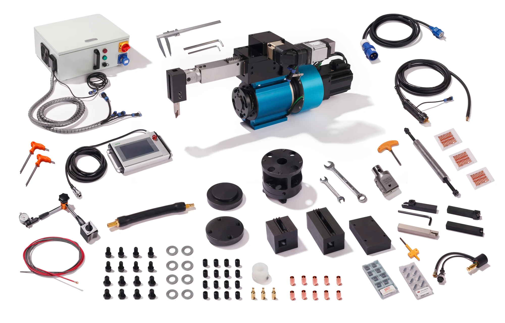

Наружное точение
Обработка цилиндрической поверхности до нужного диаметра. Автоматическая подача.
Диаметр 50–230 ммДля ремонта осей грузовых автомобилей
Орбитальный токарно-наплавочный комплекс.
Для восстановления наружных поверхностей осей и валов.
Не удалось загрузить видео. Открыть на Яндекс Диске ↗
Восстановление вместо замены
Износ наружной поверхности не всегда означает замену оси. PL50 объединяет операции, необходимые для её восстановления: нанесение металла, точение и нарезку резьбы.
Возможность ремонта определяют после дефектовки детали и выбора технологии восстановления.
Три операции. Один комплекс.
Обработка цилиндрической поверхности до нужного диаметра. Автоматическая подача.
Диаметр 50–230 ммНанесение металла на изношенный участок для последующей механической обработки.
Автоматическая наплавкаИнженерия в цифрах
мощность главного двигателя
вес основного агрегата
Комплектация PL50
Основной модуль, управление, оснастка
и расходные материалы для начала работы.

Основной модуль 2 в 1, мотор и вал подачи, автоматический пульт.
Центровочный комплект, индикатор со стойкой, штангенциркуль, головка с микрометрической регулировкой.
Наплавочный вал с евроразъёмом, переходная втулка, державки и расходные материалы.
НПК «Механик» · Екатеринбург
Сообщите диаметр, длину участка и необходимые операции. Эти данные помогут оценить, подходит ли PL50 для вашей задачи.
+7 343 312 55 88 ↗Для наружного точения и наплавки в диапазоне 50–230 мм, а также автоматической нарезки резьбы. Обрабатываемая длина — до 280 мм. Совместимость с конкретной осью проверяют по размерам, геометрии и условиям установки.
Правая и левая, метрическая и дюймовая. Требуемые шаг и профиль уточните при запросе предложения.
Да, сравните стоимость замены детали с затратами на восстановление: работу, расходные материалы и простой. Для расчёта понадобятся сведения о детали, дефекте и стоимости новой оси.
Актуальную стоимость, срок поставки, гарантию и условия оплаты подтвердим в коммерческом предложении. Отправьте запрос или позвоните нам.
Следующий шаг
Запросите актуальную цену,
комплектацию и условия поставки.